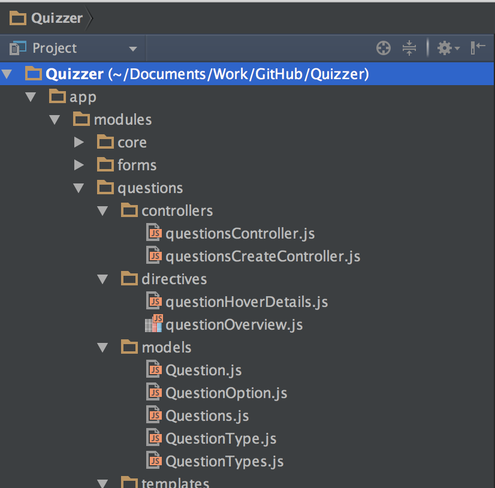

- AngularJS
- Pitches
- Hapjes en Drankjes
Carlos Kelkboom

Superheroic JavaScript MVW Framework
Wat is software?
Technical vision
Bits

Processor

Data

Data

Unless you are...
User Interface

Sir Tim Berners-Lee

Internet

DOM


What is programming?
The great divide
Object Orientation
|
Functional Programming
|
Brandan Eich

JavaScript

JavaScript 1.0

John Resig

JQuery

AngularJS

What makes AngularJS so special?
Uniformity
Cross browser development

Dependency Injection

Lots of frameworks
- Twitter bootstrap
- Firebase
- Kendo UI
- DevExpress
- Sense-i
- The list goes on...
But most importantly